-

The McIntyres of Glenartney
A Tale of Two Entire Families - Part 2
There are two McIntyre families tied into our family history. The one family whose story is told here, descended from Donald McIntyre and Mary McIntyre of Glenartney. Some of their children, namely Peter, John, Donald and Mary migrated to Australia and became landowners big-time. In the new Colony of New South Wales their lives intertwined with members of another McIntyre family, the children of our ancestors Duncan McIntyre and Catherine Kennedy. More is told about them in Part 1 of the tale.Whereabouts in Perthshire
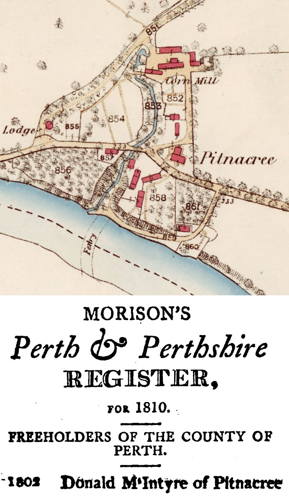The family of interest here lived in Perthshire, firstly in Comrie and then later in Callander. The parents were Donald McIntyre and Mary McIntyre who were possibly cousins of some sort. Both Donald and Mary had fathers named Donald and one of them was Donald McIntyre of Pitnacree, an estate situated in Perthshire about 8km south of Blair Castle and about 20km north of Comrie. Pitnacree would become the name of their son Peter's property in New South Wales.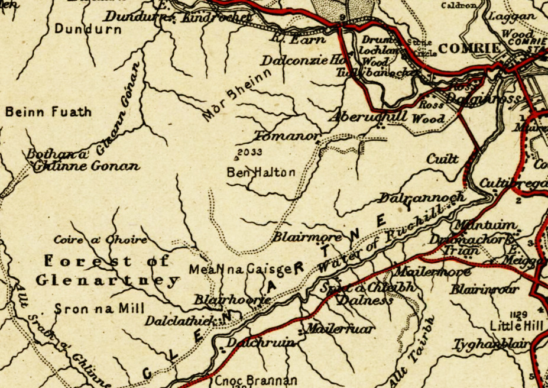An old map showing Comrie and Glenartney
Comrie and Glenartney
The name Comrie or Cuimridh in Gaelic, means "running together" denoting the place where waters flow together. And it's through Glenartney that the Water of Ruchill runs before reaching the River Earn at Comrie.
Running together could also easily refer to the highlands running into the lowlands because Comrie lies on the geological and seismically active edge of the Scottish highlands. For that reason it was chosen as the location for the Earthquake House which was setup to measure seismic activity affecting the British Isles. Comrie was also the place where people came together from the surrounding districts for meetings and major events as well as where they brought their cattle and sheep to market.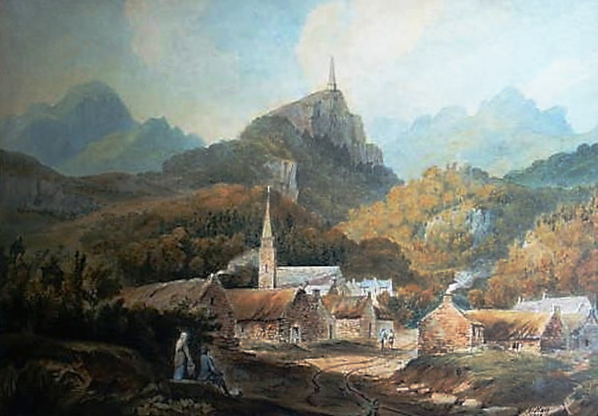Comrie in 1791
In 1799, Sarah Murray wrote in her travel book entitled
'A Companion and Useful Guide to the Beauties of Scotland':
At Comrie I again crossed the Earn, where I joined a scene of mirth and gaiety, it being the fair. The young lasses were decked out for the show, but their head-dresses struck me as very unbecoming. Their hair was snooded up; that is, bound up with a snood, or band of three-penny breadth ribbon, tied plain round the fore part of the head, leaving the long hair loose and flowing behind; which, in most parts of the Highlands, where it is simply snooded up, is very pretty for young girls; but at Comrie, they added a great bunch of a cushion, in the shape of a potatoe, put low on the forehead, and the front hair turned plain over it, which gave the appearance of a smooth, shining, solid lump of hair, stuck on close over the eyebrows.
- The Hon. Mrs. Murray, of Kensington
Donald and Mary McIntyre lived in Glenartney near Comrie where they had the first eight of their eleven children.
They then moved to Leny House near Callender where the final three were born.
- born in Comrie: Catharine 1780– David 1781–1813 soldier died in Saint-Jean-de-Luz, Pyrénées, France, unmarried Peter 1783–1842 settler died in East Maitland NSW, unmarried Alexander 1786– Elizabeth 1787– Clementina 1789– Mary 1791–1872 grazier married 1844 Rev. William McIntyre, died in Sydney NSW Donald 1793–1866 settler married 1837 Georgina McDonald, m. 1842 Sarah Todd
- born in Callander:James 1795–1837 surgeon in Newcastle, England, died in London, unmarried John 1796–1830 settler died in East Maitland NSW, unmarried Janet 1799–1833 died in Comrie Scotland 
Blairmore
The Glenartney property of the McIntyres was called Blairmore, another name recycled by Peter in NSW. The original Blairmore was situated alongside the Water of Ruchill somewhat south west of Comrie. Present day remains of the farm are still to be found.
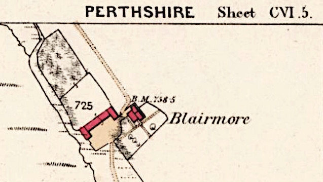Blairmore on an Ordnance Survey map
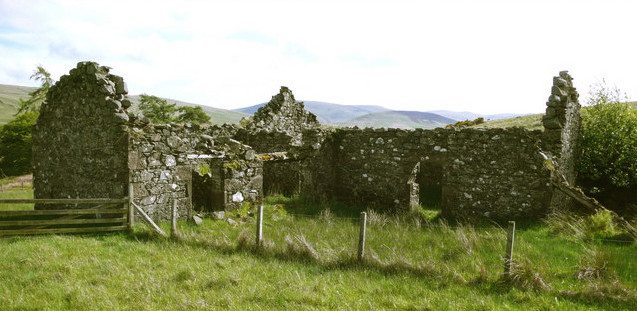Present-day Ruins of Blairmore
Both sons, Donald and Peter, won prizes for their stock breeding in Perthshire. One day, Donald got the big idea to migrate to America, which he did, in 1818 to a place called Cayuga near the Canadian border. It was, at the time situated in the state of New York but later in 1859 a Cayuga village was created on the Canadian side.
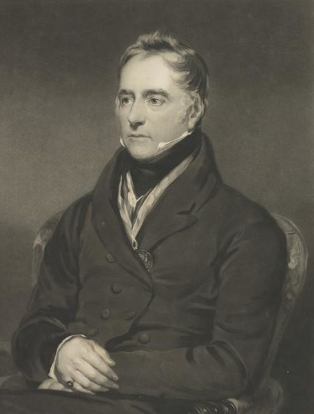Sir Patrick Murray Bart. Ochtertyre
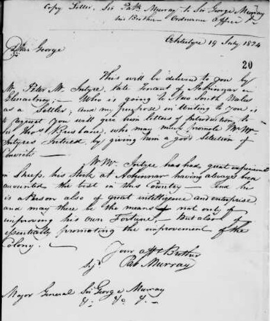Copy (of) Letter, Sir Pat. Murray to Sir George Murray his Brother Ordnance Office Ochtertyre 19 July 1824 Dear George This will be delivered to you by Mr Peter McIntyre, late Tenant of Auchinnar in Glenartney; -- Who is going to New South Wales as a Settler, and my purpose in Writing to you is to request you will give him letters of Introduction to Sir Thos Brisbane who may much promote Mr Mc Intyres Interest, by giving him a good Selection of Convicts - Mr McIntyre has had great experience in Sheep, his Stock at Achinnar having always been counted the best in this Country - and he is a person also of great intelligence and enterprise and may there be the means of not only of improving his own Fortune, - but also of especially promoting the improvement of the Colony. Your affectionate Brother Sig. Pat MurrayFriends in High Places
In the meantime somewhere around 1824 Peter landed himself a job establishing a huge estate in New South Wales for Thomas Potter Macqueen, a man who had designs on becoming the next Governor of the new colony.
To assure Peter's greater success, a letter of introduction was arranged by his friend Sir Patrick Murray of Ochtertyre. Ochtertyre is one of the old seats of the Murrays, situated between Comrie and Crieff high up on the hill above Loch Monzievaird,
Sir Patrick was in the ideal position to arrange this via his brother, Sir George Murray who was at the time Governor for the Colonies in Canada and just happened to be a friend of the current Governor of New South Wales, Sir Thomas Brisbane. Sir Patrick wrote:
Segenhoe Estate
The newly established estate set up by Peter McIntyre situated in the Upper Hunter Valley of New South Wales came to be known as Segenhoe named after Macqueen's mother's property Segenhoe Manor in Ridgemont, England. By arrangement with the British Government, Peter acquired large land grants for himself as well as for his brothers John, Donald and James. A lot of money, eventually about 20000 pounds sterling was pumped into Segenhoe by Macqueen over the course of time which later became his financial downfall. Peter managed to convince John to migrate with him, on the "Hugh Crawford", and Donald a few years later on the "City of Edinburgh", but James stayed behind and moved to Newcastle to establish himself as a well known surgeon.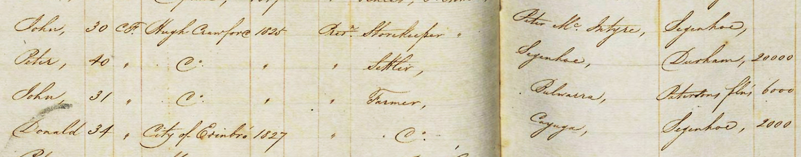1825 Census of New South Wales with the names of Peter, John and Donald and their locations
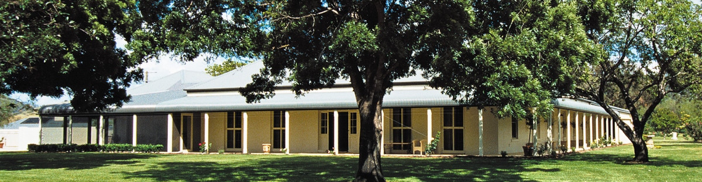Segenhoe Homestead
The Lands of the McIntyres
In New South Wales Peter, John and Donald all bought up land in a big way. Peter named his first estate Blairmore after his parent's Glenartney property in Perthshire. John's properties were called Bulwarra, Kingholme and Torryburn.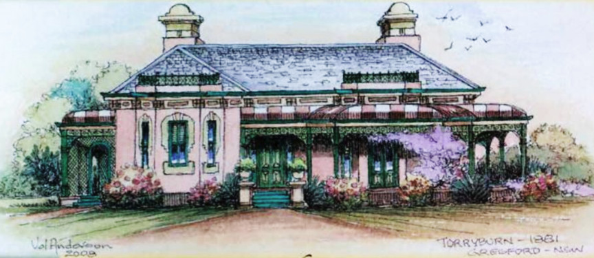Torryburn was later owned by the father of Dorothea McKellar, the woman who wrote the famous poem "My Country" which opened with the iconic line "I love a Sunburned Country" possibly penned on the porch of the Torryburn homestead. Donald joined them in 1827 and named his property Kayuga in honour of his American successes.Torryburn Homestead
In exchange for acquiring crown owned land, the settlers were required to take on one convict for every hundred acres which meant of course that they had a lot of convicts under their responsibility. This was later to become John's untimely downfall for he was murdered in 1830 by one of those convicts. The whole affair shook Peter and Donald immensely.Peter's concentration and enthusiasm lagged somewhat and Donald, on the other hand, took to personally returning to Scotland to collect some Scottish highlanders as his new labour force.
From the Land Grievances in the Weekly Register
Next door to John's Bulwarra and Torryburn properties, Peter had built up yet another estate for himself which he named Pitnacree after his grandfather's Scottish home. This would become the main part of East Maitland. Peter's sister Mary must have joined him sometime in the late eighteen thirties. She had accompanied her brother Donald who was returning with his newly wedded wife, and his bunch of hand picked workers, on the "Earl Durham" in 1837. Mary worked with Peter and the other Donald McIntyre in Blairmore absorbing their management and acquisition skills to later become one of the largest land owners in New South Wales. At one time she had at least 465,000 acres on only three of the many properties under her ownership and control, grazing both sheep and cattle.
The Two Donalds
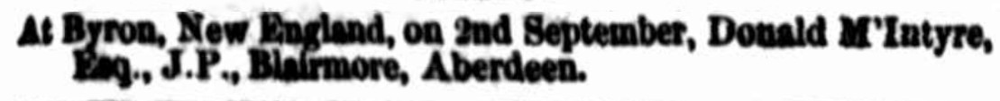Sometime earlier than that though, our own 2nd great-grand-uncle, the other Donald McIntyre, from the Kilmonivaig McIntyres, took over management of Peter's Blairmore property, and came to be known as Donald McIntyre Esq. of Blairmore in all legal transactions and published notices.
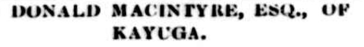Peter's brother Donald of the Glenartney McIntyres probably decided to change the spelling of his surname at that time to differentiate himself, preferring to use the moniker of Donald Macintyre Esq. of Kayuga.
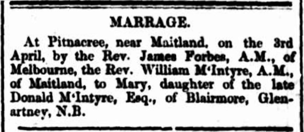The Uncles Arrive
There are plenty of records of lands being purchased by 'our' Donald and Peter's sister Mary together and being written as "both of Blairmore". So when the next brother, Reverend William McIntyre arrived, it would have been rather easy for him to meet his future wife Mary through her association with Donald. It's unknown as to whether Donald had any romantic intentions towards Mary but obviously William was the one who nabbed her first.
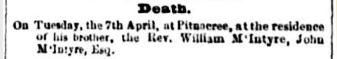John McIntyre another of our 2nd great-grand-uncles was also involved with both families of McIntyres having been a manager at Peter's, and eventually Mary and William's Pitnacree estate, and that is where he passed away in 1857.

1837, Entrance to West Maitland,
by Robert Russell (National Library of Australia)Going in to Maitland
Our thrice great-grandfather Archibald McIntyre was the next of the brothers to arrive. When he turned up on the scene in the 1850's it was only natural that he and his wife Jessie and their six children would end up living first in Maitland and then Aberdeen.
Their son John Archibald, for instance, had attended the school William founded in Maitland and learnt the ropes of station management from all the older and experienced McIntyres around him. He in turn took up station management of huge stations all over New South Wales and Queensland, very often buying them up and also becoming a big property owner. The rest of the Archibald and Jessie story is told elsewhere.
Mary before the Married Women's Act of 1870
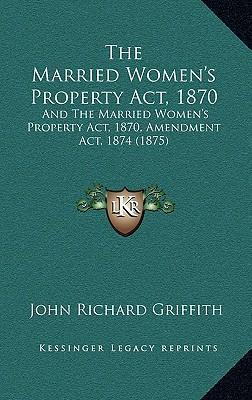It had originally been assumed that Peter had died without a Will so his brother Donald took over the running of Peter's fortune but it was eventually discovered that his sister Mary had in fact been the sole heir. At that time Mary was still single and was allowed by law to inherit. That status would be lost as she would relinquish legal rights to her property when she married William in 1844.
So shortly before that happened, Mary set up a Trust. Although expensive, this was the usual practice for women with wealth to circumvent the loss of legal status imposed upon married women. As exececutors of the trust, Mary nominated her husband-to-be William and his brother Donald along with a Newcastle solicitor named George Brooks. Accordingly, real estate, goods and livestock were to be transferred into the names of the Trustees, placing her as the beneficiary. That way only the legal titles would be passed on to her husband and she would possess the equitable titles, meaning she would have the say over what could happen to her property.
It is important to note here that the executors of Peter's estate were his sister Mary and his good friends Tod Goodsir, Thomas Gore, and Donald McIntyre (William's brother).
Peter's estate was valued at £25,000.
The executors of Mary's estate were Duncan Kennedy McIntyre (William's brother) and Peter's nephew Donald McIntyre, the son of his brother Donald. The young Donald was only seventeen at the time and accordingly rejected acting as Executor.
Mary's estate was valued at £5,900.
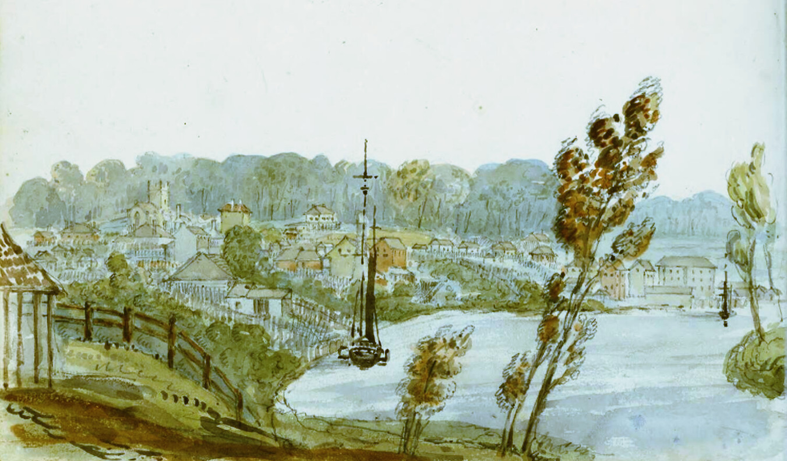c1845, Morpeth, by Edward Charles Close (National Library of Australia)
Peter in Morpeth
Towards the end of Peter's life he spent more time in Maitland, Pitnacree and Morpeth. Morpeth was the hub of commercial activity and the thriving port for Maitland, receiving produce from all over the Hunter Valley and shipping it to Newcastle and Sydney.
These places are all very close to where his daughter later settled with her husband and family, although well after Peter died.
The children of Agnes and Thomas were: * buried in the same plot as the parents at Tenambit, Maitland (Find-A-Grave 53522508) * buried in rhe same plot as each other at East Maitland (Find-A-Grave 48628860) James 1847- Peter 1849- * Agnes 1851–1926 aged 75 Maitland 1873 married Roderick McDonald (1842-1888) John 1854–1921 aged 67 Kogarah 1885 married Gertrude Bonarius (1864-1935) * William McIntyre 1855–1928 aged 72 W.Maitland + Thomas '5th son' 1857–1905 aged 48 1883 married Mary Ann Drew (1856-1935) + Donald 1859–1859 aged ½ Maitland + Peter 1859–1868 aged 19 Maitland drowned in Hunter River + Henry '7th son' 1861–1903 aged 42 W.Maitland * Fraser McKenzie 1863–1932 aged 69 Wyong 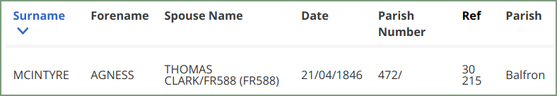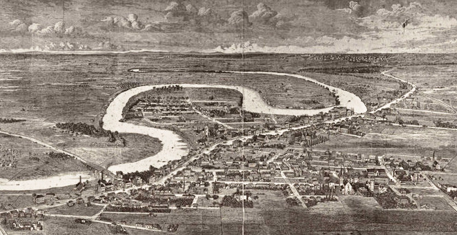Horseshoe Bend, West Maitland
Peter's Descendants
According to Peter's Will he had a daughter named Ann (but better known as Agnes) living in Scotland. When Peter died his daughter was to be left £2000, a hefty sum at the time. Nothing much else has been said about this seemingly mysterious daughter but looking into records of births, marriages and deaths reveals much more information. There are also some extra clues available from memorials and newspapers.
Peter's sister Mary passed away in 1872 and her Will contained an extra note saying that Ann (Agnes) had married a Thomas Clark of Maitland, they had seven children and that she had recently died (by 1872).
Also made known was that Agnes hadn't received her inheritance and that Thomas was to be the new recipient. In fact, some land had already been transferred to him and the rest was due to him at the highest priority.
Agnes McIntyre and Thomas Clark
Agnes McIntyre was born in 1820 in Scotland and died in West Maitland, April 11 1871, aged 50. The NSW Probate record has the same date of death but has her name as Ann.
She married Thomas Clark on April 21, 1846 in Balfron, Scotland.
Thomas Clark was born in 1821 in Balfron and died in West Maitland, June 6 1894, aged 72.
The funeral notice for Agnes tells us that she and her husband lived at Government Road, Horseshoe Bend, West Maitland. The obituary for Thomas says that he arrived in the colony in August 1856 and at once settled in the Bend. At that time the area was little more than a wilderness. He remained in the same cottage conducting a grocery business from 1857 until his death.
Donald's Descendants
Donald was also married and had offspring.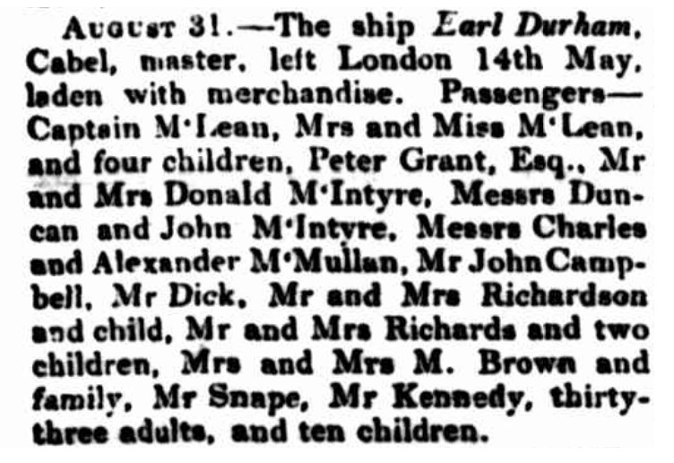The arrival of Donald and Georgina
Donald and Georgina
Peter and Mary's brother, Donald was married twice. His first marriage was in February 1837 to Georgina Watts McDonald, daughter of the late John McDonald Esq. at Ness Castle. Donald was in Scotland at the time rounding up new staff and servants for his properties in the colony. The newly wed couple left London in May of the same year on board the ship Earl Durham and arrived in Sydney along with the newly hired hands in September. The couple had at least two children but tragically both died and even worse Georgina herself died soon after giving birth.
Donald and Sarah
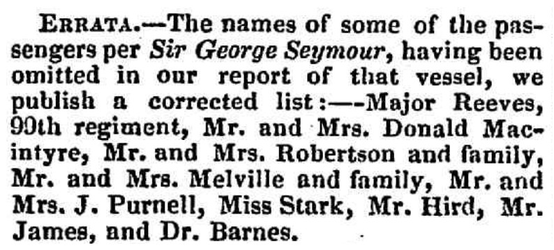News of the arrival of Donald and Sarah
Donald made another trip to Scotland in 1845 to collect a further shipload of Scottish workers and again found himself a wife. He and Sarah Robina Todd were married in April 1846 in Kinnoull, Perthshire. They travelled to New South Wales aboard the George Seymour arriving November 1846.
Donald and Sarah had four children:Eventually, Sarah moved to London where she took an active interest in the affairs of her siblings often reading and writing to newspapers for over 25 years. She passed away in 1942 at the age of 95.
Sarah M. 1847–1942 Donald 1849–1902 Margaret 1852–1911 Elizabeth 1855–1945
Margaret became a singer and was known as the Scottish Nightingale, travelling around the world and finally settling in North Berwick, Scotland where she died in 1911.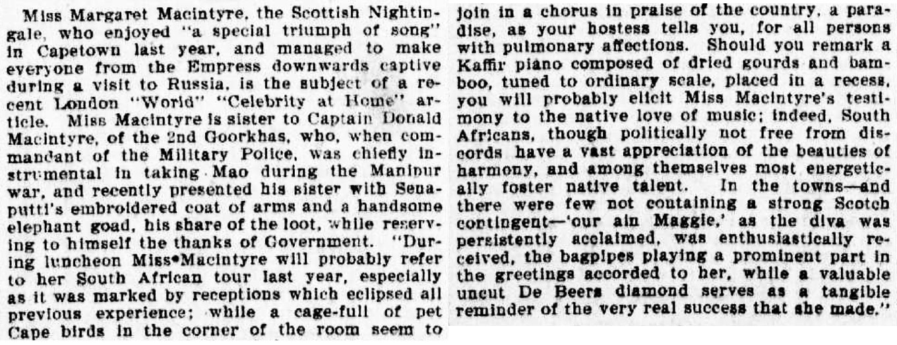
When their father Donald died in 1866, all his properties, including Kayuga and Cuan Cuan, were placed in the hands of the Boulton Brothers who acted as managers waiting for the time when his only son, Donald could take them over. Before doing this, Donald went to Edinburgh to receive further education. Upon returning he followed in his father's footsteps.
Donald and Charlotte
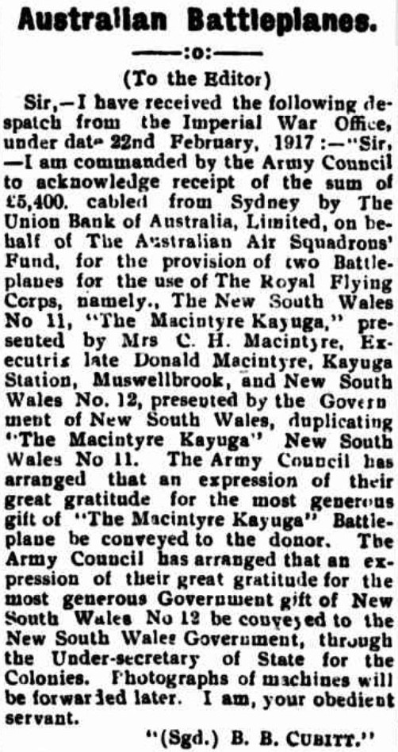
The children of Donald and Sarah's sonIn 1887 Donald married Charlotte Helen MacCabe and they had six children.
Donald and his wife Charlotte were:
Captain Donald 1890–1965 Major Peter O.B.E. 1891–1942 Captain Ian 1893–1947 Helen Margaret Isabel Mora 1894–1982 Colonel Alistair 1896– Captain David Hamilton 1898–
Tragically in 1902, only a few years after the youngest child was born, Donald passed away at the age of 52.
Although the children were born, raised and educated in the colony, in 1911 their mother decided to move them all to England. The assets in New South Wales remained in family hands but managers were placed in charge of running the properties.
In England, all five sons joined the military and became high ranking officers. With a family so dedicated to the armed forces it shouldn't come as much of a surprise that in 1917, Charlotte donated 5,400 pounds sterling to the Imperial War Office for two Battleplanes.
The Return to Kayuga
In December of 1932, the first of the children returned with the eldest son, Captain Donald Macintyre, having taken up residence in Kayuga. He later moved to 'Knockmany' at Glen Innes.
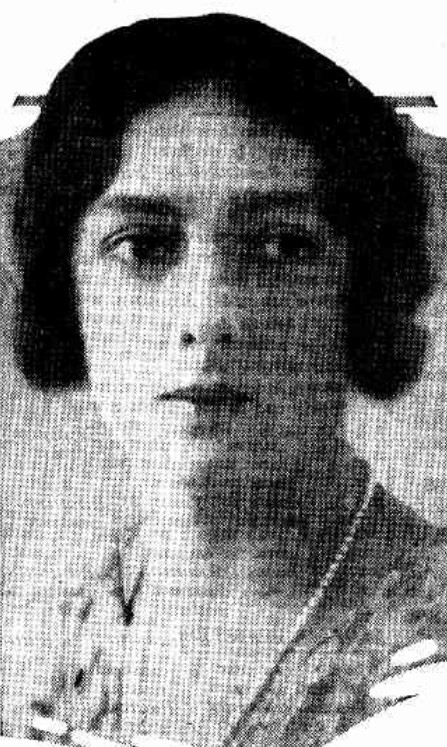He was followed in January 1933 by his brother Captain David Hamilton whose wife is seen pictured here.Mrs. D. Macintyre
In June 1933 they were joined by another brother, Captain Ian Macintyre who had been market gardening in Ceylon and Cornwall. He married Madeline Clare Cotton in February 1935.
Also in 1933, a fourth brother, Major (Francis) Peter Macintyre bought the property 'Glenartney' at Qurindi. He married Evelyn Mary St. Clair Synnot in December of that year. Some of the Macintyre brothers engaged themselves in industry especially with factories in Quirindi. Their only sister, Mora lived in Onslow Gardens, London and in 1921 married George Matthey.
David and Susan
Captain David Hamilton Macintyre's son David Macintyre married Di Moore and their daughter Bridget McIntyre better known as Bud Hyem was the first female equestrian to represent Australia at the Olympic Games.
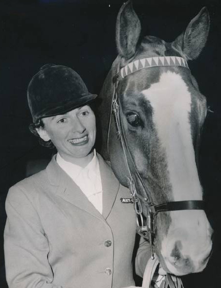Bud Hyem (Bridget Macintyre)
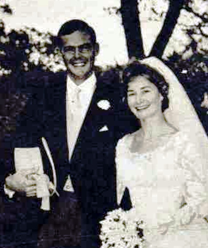Bridget's brother David married Susan Scales in 1961
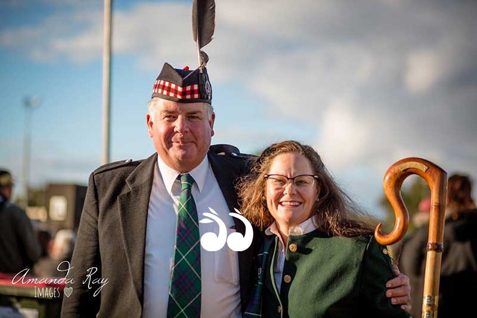David and Susan's children, Duncan and Nicola continue the family's tradition of holding highland games in Aberdeen each year
About Us
We are the descendants of Anglo-Scottish-Prusso-Germanic Australian migrants who settled in the newly formed colonies of New South Wales and Queensland in the nineteenth century. The idea behind these pages is to present the stories and characters of those early settlers along with information about their origins, descendants, families, whereabouts and activities.There are often themes running through their struggles and achievements telling a tale of resourcefulness and hardships in an alien world. The paradox of Australia as an ancient and raw continent and as a 'New World' portrays a collision of ideals and realities yet still shows a continuity in how those people dealt with everyday life.